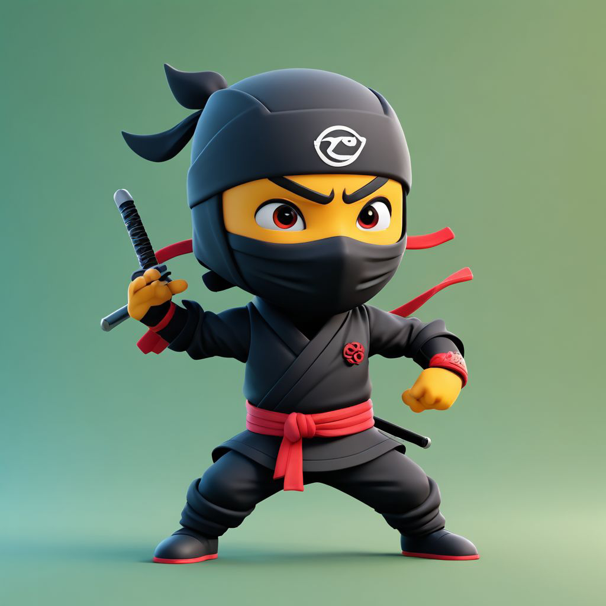
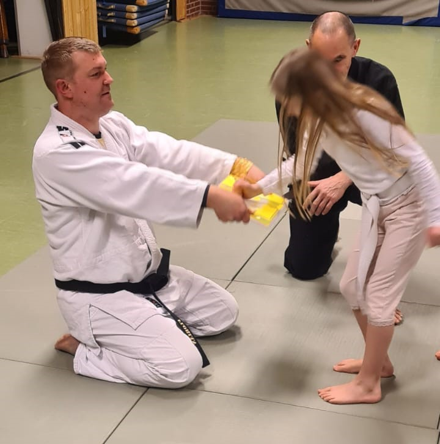
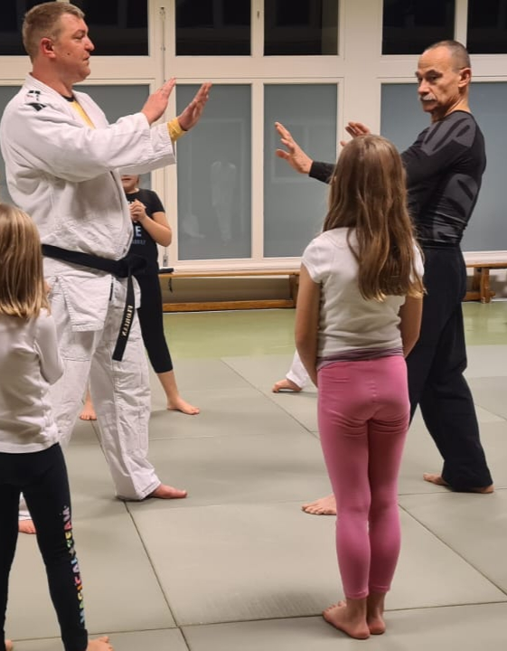
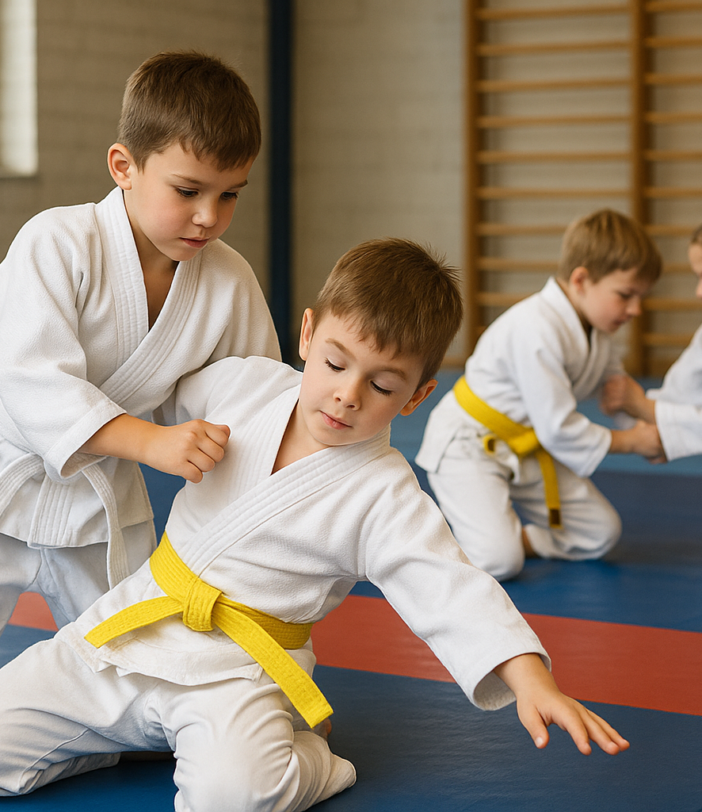
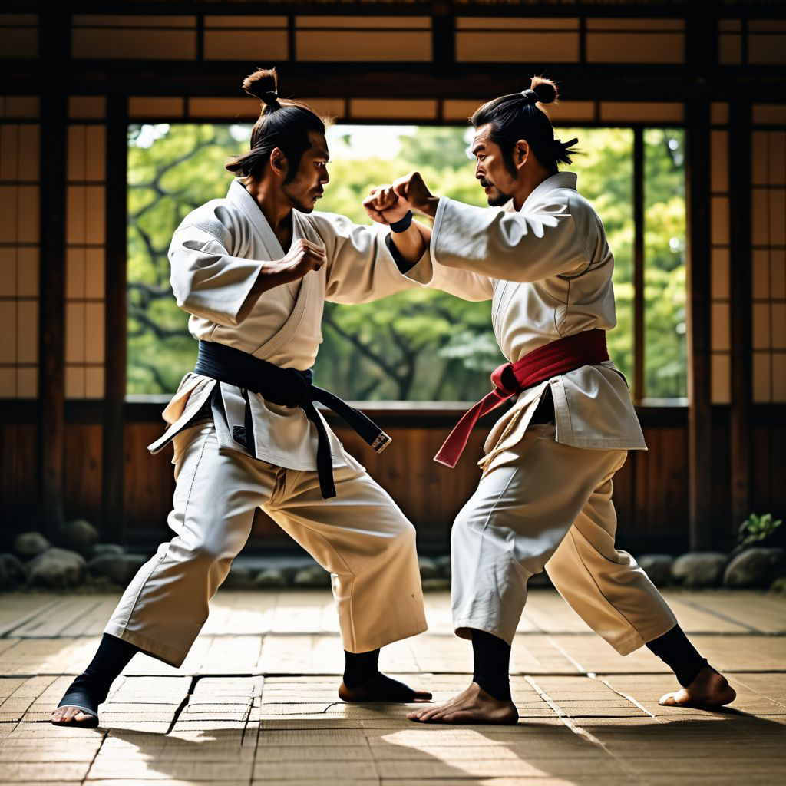
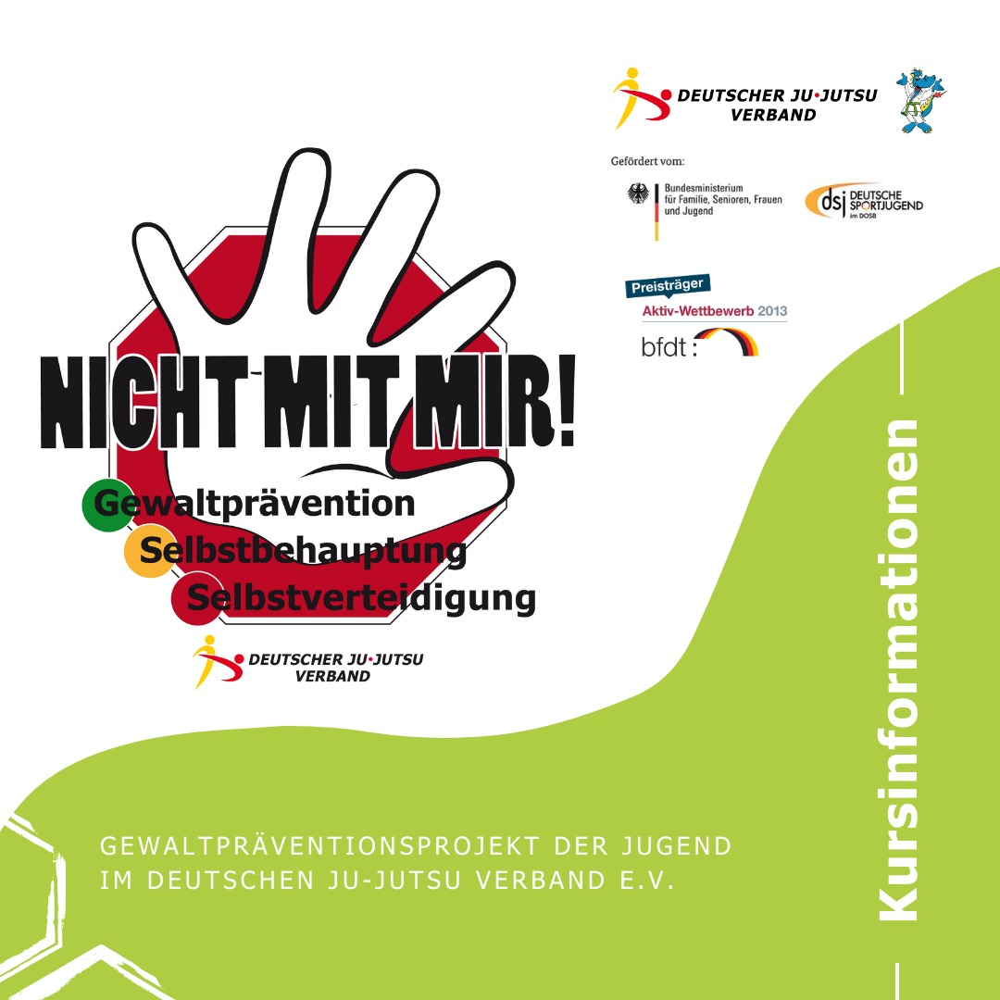
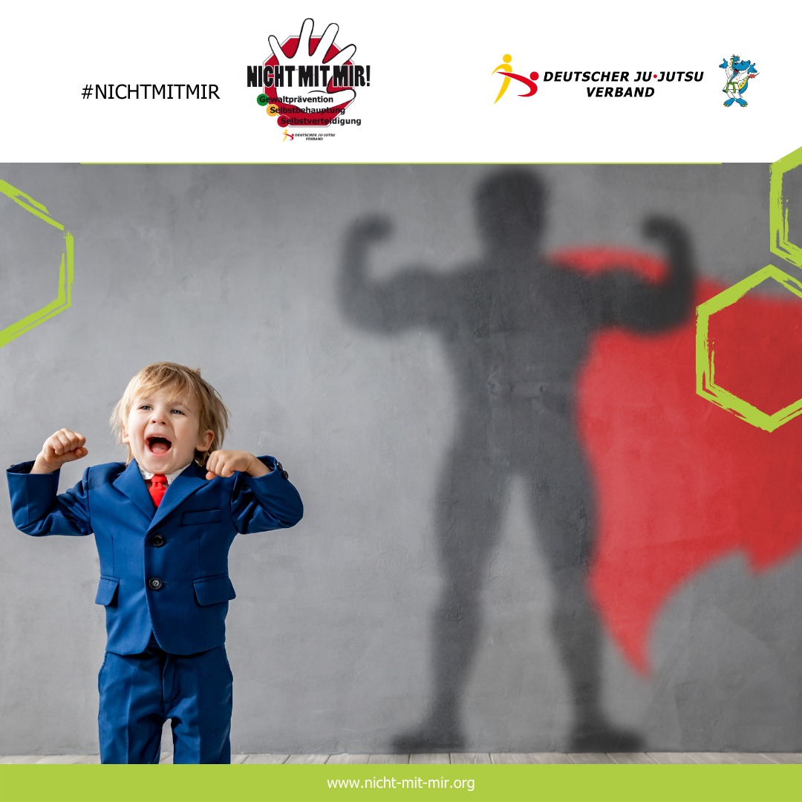
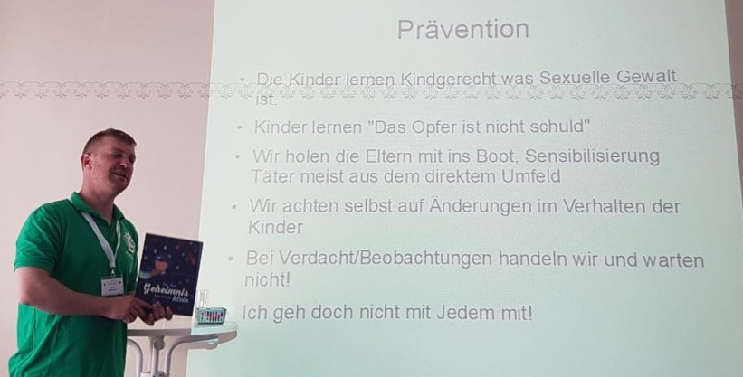
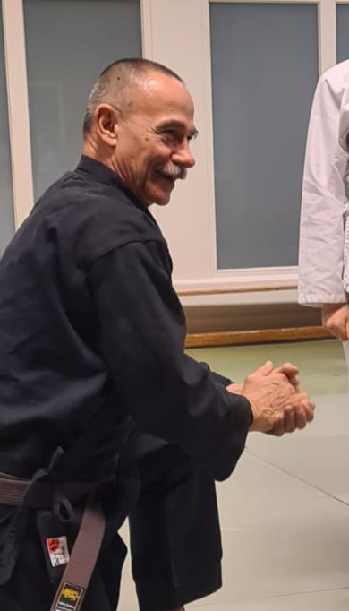
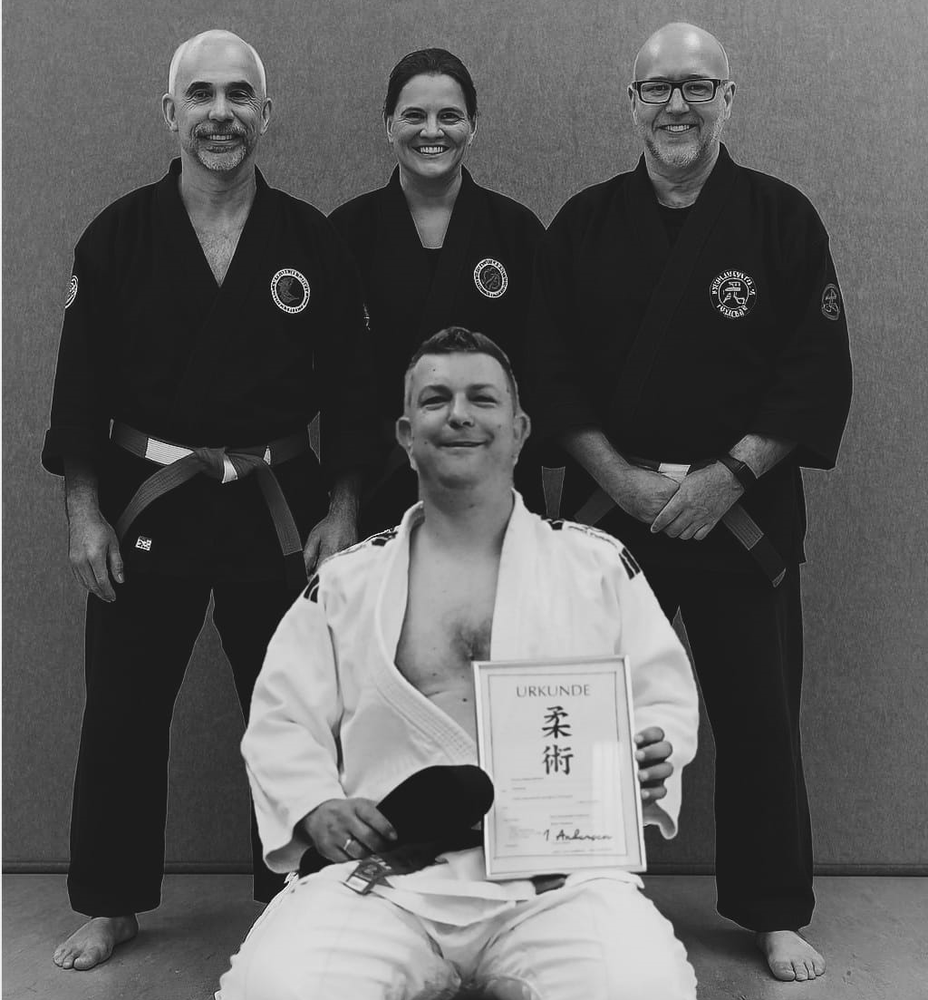

Unser Ziel
Sicher. Stark. Selbstbewusst.
Willkommen bei „Kampfkunst für Kinder“ – der Abteilung, die Kampfkunst und kindgerechte Selbstbehauptung vereint!
Bei uns lernen Kinder nicht nur Techniken – sie entwickeln Selbstvertrauen, Respekt und Achtsamkeit. Unser Training nutz traditionelle Kampfkunst und moderne Selbstbehauptung – abwechslungsreich, wirkungsvoll und mit viel Freude vermittelt.
Unser qualifiziertes Trainerteam:
Florian (1. Dan Ju-Jitsu) – erfahrener Kampfkünstler, Gewaltschutzbeauftragter des HSC und zertifizierter Kursleiter des Programms „Nicht mit mir!“, einem bundesweiten Konzept zur Gewaltprävention für Kinder.
Bruno (1. Kyu Judo) – engagierter Trainer, der seine Begeisterung für Bewegung und Disziplin weitergibt. Seine besondere Stärke ist die innere Ruhe, die er durch sein Alter ausstrahlt.
Wir vermitteln Techniken zur Selbstbehauptung und Selbstverteidigung aus dem „Nicht mit mir!“-Programm in Kombination mit bewährten Übungen aus dem traditionellen Ju-Jitsu. So entsteht ein kindgerechtes und modernes Konzept, das Körper und Geist gleichermaßen stärkt.
Trainiere mit uns – für Stärke, Sicherheit und Spaß!
Was ist Jujutsu?
Jujutsu (auch Jujitsu oder Jiu-Jitsu) ist eine traditionelle japanische Kampfkunst, die sich auf waffenlose Selbstverteidigung spezialisiert hat. Das Wort „Jujutsu“ bedeutet wörtlich „die sanfte Kunst“ oder „die Kunst der Nachgiebigkeit“. Es basiert auf Techniken, bei denen man die Kraft des Gegners nutzt, um ihn zu kontrollieren oder zu überwältigen – etwa durch Hebel, Würfe, Gelenkmanipulationen, Würgetechniken und Bodenkampf.
Entstehung von Jujutsu
Jujutsu entstand im feudalen Japan zwischen dem 15. und 17. Jahrhundert, in einer Zeit, in der Samurai als Kriegerklasse vorherrschend waren. Da Schwerter und Rüstungen im Kampf nicht immer eingesetzt werden konnten, entwickelten Samurai Jujutsu als waffenlose Technik für den Nahkampf, insbesondere wenn sie unbewaffnet oder in beengten Räumen kämpften. Die Techniken wurden über Generationen verfeinert und in verschiedenen Schulen (Ryu) weitergegeben.
Vergleichbare Kampfsysteme
- Judo: Entwickelt aus traditionellen Jujutsu-Techniken Anfang des 20. Jahrhunderts von Jigoro Kano. Judo fokussiert sich auf Würfe, Haltetechniken und den sportlichen Wettkampf, weniger auf Selbstverteidigung und Bodenkampf mit Schlägen.
- Brazilian Jiu-Jitsu (BJJ): Entstand aus dem klassischen Jujutsu/Judo und legt den Schwerpunkt auf Bodenkampf, Hebel und Submission-Techniken. BJJ ist heute vor allem im MMA und als Selbstverteidigungssystem bekannt.
- Aikido: Entwickelt von Morihei Ueshiba, basiert Aikido ebenfalls auf Jujutsu-Techniken, legt aber starken Wert auf harmonische, kreisförmige Bewegungen zur Kontrolle des Gegners ohne Verletzung. Es hat einen spirituellen, friedlichen Fokus.
- Sambo: Eine russische Kampfkunst, die Elemente von Jujutsu, Ringen und Boxen kombiniert. Schwerpunkt liegt auf Würfen und Bodenkampf.
Wichtigste Unterschiede
| System | Fokus | Haupttechniken | Wettkampf? | Philosophischer Ansatz |
|---|---|---|---|---|
| Jujutsu | Selbstverteidigung, vielseitig | Würfe, Hebel, Schläge, Würgen | Selten | Praktisch, effektiv im Kampf |
| Judo | Sportlicher Wettkampf | Würfe, Haltegriffe | Ja | Fairness, körperliche Ertüchtigung |
| Brazilian Jiu-Jitsu | Bodenkampf, Submission | Hebel, Würgegriffe am Boden | Ja | Kontrolle, Effizienz am Boden |
| Aikido | Harmonie, Selbstverteidigung | Umlenken von Kraft, Würfe, Hebel | Nein | Frieden, spirituelle Entwicklung |
| Sambo | Wettkampf, Selbstverteidigung | Würfe, Bodenkampf, Schläge | Ja | Effektivität, Vielseitigkeit |
Zusammenfassung
Jujutsu ist die traditionelle Basis vieler moderner Kampfkünste, die sich in verschiedenen Richtungen weiterentwickelt haben – vom Sportjudo bis zum Bodenkampf im BJJ oder der spirituellen Harmonie im Aikido. Sein großer Vorteil liegt in der Vielseitigkeit und der effektiven Nutzung der Kraft des Gegners, was es zu einem zeitlosen Selbstverteidigungssystem macht.
„Nicht mit mir!“
„Nicht mit mir!“ – Selbstbehauptung für Kinder
Ein zentraler Bestandteil unseres Trainings ist das „Nicht mit mir!“-Programm. Es wurde speziell für Kinder entwickelt und vermittelt auf spielerische Weise:
- wie man Gefahren frühzeitig erkennt,
- wie man laut und deutlich Nein sagen kann,
- wie man Hilfe holt,
- und wie man sich im Ernstfall auch körperlich wehren kann.
Das Ziel ist klar: Kinder sollen sich sicher, stark und geschützt fühlen – im Alltag, in der Schule, auf dem Heimweg oder beim Spielen.
Trainingszeiten
Das Probetraining ist kostenlos und umfasst drei Trainingseinheiten.
Anmeldung zum Probetraining und zur Warteliste bei Florian über folgende möglichkeiten
📞 +49 171 112 5740
+49 171 112 5740
✉️ florianbertzen@gmail.com
Das Kindertraining ist aktuell ausgebucht, bei Interesse nehmen wir Sie gerne auf die Warteliste mit auf.
Ein Jugendtraining befindet sich in Planung, schaut regelmäßig hier vorbei um die Infos über start und Ort zu erhalten.
- Kindertraining: Donnerstag 18:00 – 19:30 Uhr - aktuell nur mit Warteliste, Anmeldung bei Florian
- Jugendtraining in Planung
- Bujinkan Abteilung Erwachsene Dienstag 20:00 - 22:00 Uhr
- Bujinkan Abteilung Erwachsene Donnerstag 20:00 - 22:00 Uhr
Trainingort - Gymnastikhalle Alexander-von-Humboldt Gymnasium
ACHTUNG der Zugang über die Rönneburger Straße ist durch eine Baustelle aktuell nicht möglich. Zugang über den Eingang am Hanhoopsfeld
Veranstaltungen
- 05. Juni – Gürtelprüfung Kinder - kein Training
- 07. - 09 Juni – Super Seminar Aurich
Trainerausbildung
Kompetenz, Sicherheit und Qualität

Unser Trainerteam bei Kampfkunst für Kinder steht für Qualität und Transparenz.
Deshalb legen wir besonderen Wert auf ein fundiert ausgebildetes und engagiertes Trainerteam. Unsere Trainer verfügen über anerkannte Lizenzen, langjährige Erfahrung im Ju-Jutsu und Judo sowie eine kindgerechte pädagogische Ausbildung.
Wir bilden uns kontinuierlich fort, um stets nach den neuesten Standards zu unterrichten. Unser Team nimmt regelmäßig an zertifizierten Schulungen teil – unter anderem bei:
Durch diese enge Zusammenarbeit mit Fachverbänden und Bildungseinrichtungen garantieren wir ein Training, das fachlich fundiert, sicherheitsbewusst und pädagogisch durchdacht ist.
Verlässlichkeit & Verantwortung
Der Schutz und das Wohl der uns anvertrauten Kinder steht für uns an erster Stelle.
Daher legen alle Trainer von Kampfkunst für Kinder regelmäßig ein erweitertes polizeiliches Führungszeugnis vor und haben den Ehrenkodex der Deutschen Sportjugend unterzeichnet.
Wir leben diesen Kodex nicht nur auf dem Papier – sondern in jeder Trainingseinheit: durch Respekt, Fairness, Vorbildfunktion und ein sicheres, vertrauensvolles Miteinander.
Vertrauen Sie auf geprüfte Qualität – für die bestmögliche Förderung und Sicherheit Ihres Kindes.
Trainer Florian
Florian-Niklas Bertzen – Mit Herz, Können und Erfahrung für unsere Kinder

Mein Name ist Florian-Niklas Bertzen, ich bin 42 Jahre alt und seit über 15 Jahren begeisterter Kampfkünstler. Mein Einstieg in die Welt der Kampfkunst begann mit dem Wunsch, persönlich zu wachsen und körperlich fitter zu werden. Durch die Unterstützung meines Trainers und Mentors Hans Kautz eröffnete sich für mich bald die Möglichkeit, mein Wissen und meine Werte an die nächste Generation weiterzugeben. Um dieser Verantwortung gerecht zu werden, absolvierte ich eine fundierte und praxisnahe Ausbildung.
Mein Werdegang & Qualifikationen:
- DOSB-zertifizierter Trainerassistent
- Kursleiter „Nicht mit mir!“ – Gewaltprävention für Kinder
- Kursleiter „Nicht mit mir – Fit und Sicher“
- Kinder- und Jugendschutzbeauftragter im Verein (DOSB)
- Gewaltschutzbeauftragter im Verein
Im Jahr 2024 wurde mir der 1. Dan im Ju-Jutsu verliehen – ein bedeutender Meilenstein meiner Laufbahn. Im selben Jahr wurde ich zudem in den renommierten World Black Belt Council der MAA-I aufgenommen – eine internationale Auszeichnung für besondere Leistungen in der Kampfkunst.
Ich bin Gründer und verantwortlicher Leiter der Kinderabteilung, die ich mit großem Engagement, viel Herzblut und pädagogischem Feingefühl aufgebaut habe. Mein Ziel ist es, Kinder nicht nur körperlich, sondern auch mental zu stärken – durch Werte wie Respekt, Disziplin und Teamgeist.
Wettkampferfolge:
Während meiner aktiven Zeit als Wettkämpfer konnte ich mehrere Platzierungen auf regionaler Ebene im Ju-Jutsu Fighting erreichen. Diese Erfahrungen fließen heute gezielt in das Training ein – stets mit dem Fokus auf einen kindgerechten, motivierenden Ansatz.
Besonders stolz bin ich auf die Erfolge meiner Schützlinge im Bodenrandori, bei dem Kinder unter meiner Anleitung mehrfach erste und zweite Plätze errungen haben. Diese Erfolge zeigen die Qualität und Wirksamkeit unseres Trainingskonzepts.
Trainerteam:
Unterstützt werde ich von einem qualifizierten Trainerteam – allen voran Bruno (1. Kyu Judo), der mit seiner langjährigen Erfahrung und seiner ruhigen, besonnenen Art einen wertvollen Beitrag zur Qualität unseres Trainings leistet.
„Kinder stark machen“ ist für mich nicht nur ein Motto – es ist meine Leidenschaft.
Ich freue mich darauf, Ihr Kind auf seinem Weg zu mehr Selbstvertrauen, Sicherheit und körperlicher Stärke zu begleiten.
Trainer Bruno
Bruno – Erfahrung, Empathie und Energie vereint

Mit über 60 Jahren bringt Bruno nicht nur beeindruckende körperliche Fitness mit, sondern auch eine außergewöhnliche Mischung aus Lebenserfahrung, Leidenschaft und Einfühlungsvermögen. Geboren in Frankreich und geprägt durch viele Reisen rund um den Globus, begegnet Bruno Menschen mit einem tiefen Verständnis für unterschiedliche Kulturen – ein wertvoller Schatz in jedem Training.
Als Seelsorger hat er gelernt, zuzuhören, zu begleiten und echte Verbindung zu schaffen. Diese Qualität spüren auch seine Schüler: Bei Bruno steht nicht nur die Technik im Mittelpunkt, sondern der Mensch als Ganzes. Ob im Gespräch am Mattenrand oder während des Trainings – er hat immer ein offenes Ohr.
Bruno besitzt den 1. Kyu im Judo und widmet sich aktuell mit voller Energie seinem nächsten Ziel: dem 1. Dan im Ju-Jutsu.
Sein Wissensdurst, seine Disziplin und seine spürbare Begeisterung für den Kampfsport machen ihn zu einem echten Vorbild – unabhängig vom Alter.
Bruno zeigt: Stärke ist nicht nur körperlich, sondern beginnt mit Haltung, Herz und Hingabe.
Galerie
Kindertraining
Trainer Florian

Trainer Bruno


Prüfung & Training
Impressum
Impressum
(Angaben gemäß § 5 TMG und § 55 RStV)
Verantwortlich für den Inhalt dieser Website:
Florian-Niklas Bertzen
Kleinfeld 77a
21149 Hamburg
Deutschland
📞 +49 171 112 5740
✉️ florianbertzen@gmail.com
Datenschutzerklärung
📄 Datenschutzerklärung
1. Allgemeine Hinweise
Der Schutz Ihrer persönlichen Daten ist uns ein wichtiges Anliegen. Wir behandeln Ihre Daten vertraulich und entsprechend der gesetzlichen Datenschutzvorschriften (insbesondere DSGVO und TMG).
Diese Erklärung erläutert, welche Daten wir erheben, wie wir sie verwenden und welche Rechte Sie als Nutzer haben.
2. Verantwortlicher
Florian-Niklas Bertzen
Kleinfeld 77a
21149 Hamburg
Deutschland
📞 Telefon: (+49) 171 / 112 574 0
📱 WhatsApp: (+49) 171 / 112 574 0
📧 E-Mail: florianbertzen@gmail.com
3. Erhebung und Speicherung personenbezogener Daten
a) Beim Besuch dieser Website
Beim Aufruf unserer Website werden durch den Browser automatisch Daten an unseren Server übermittelt. Diese umfassen u. a.:
IP-Adresse
Datum und Uhrzeit des Zugrufs
Browsertyp und -version
verwendetes Betriebssystem
Referrer-URL
Diese Daten dienen ausschließlich der technischen Funktionssicherung und werden nicht zur Identifizierung genutzt.
b) Kontaktaufnahme
Wenn Sie uns per E-Mail, Telefon oder WhatsApp kontaktieren, speichern und verarbeiten wir Ihre Angaben zur Bearbeitung Ihrer Anfrage. Eine Weitergabe erfolgt nur mit Ihrer ausdrücklichen Einwilligung.
Hinweis zu WhatsApp: Durch die Nutzung von WhatsApp willigen Sie ein, dass Ihre Daten gemäß den Datenschutzrichtlinien von Meta Platforms Inc. (USA) verarbeitet werden. Dies kann eine Datenübertragung in Drittländer beinhalten.
4. Einbindung von Google Maps
Unsere Website nutzt Google Maps zur Darstellung des Trainingsorts. Beim Aufruf der Karte werden Daten (z. B. IP-Adresse, Standortinformationen) an Google übertragen.
Anbieter: Google Ireland Limited, Gordon House, Barrow Street, Dublin 4, Irland
Mehr Informationen: https://policies.google.com/privacy
5. Ihre Rechte
Sie haben jederzeit das Recht auf:
Auskunft über Ihre gespeicherten Daten (Art. 15 DSGVO)
Berichtigung unrichtiger Daten (Art. 16 DSGVO)
Löschung Ihrer Daten (Art. 17 DSGVO)
Einschränkung der Verarbeitung (Art. 18 DSGVO)
Datenübertragbarkeit (Art. 20 DSGVO)
Widerruf Ihrer Einwilligung (Art. 7 Abs. 3 DSGVO)
Widerspruch gegen Datenverarbeitung (Art. 21 DSGVO)
Beschwerde bei einer Aufsichtsbehörde (Art. 77 DSGVO)
6. Datensicherheit
Wir setzen technische und organisatorische Maßnahmen ein, um Ihre Daten vor Verlust, Manipulation und unberechtigtem Zugriff zu schützen. Unsere Website nutzt eine verschlüsselte Verbindung (SSL).
7. Änderungen
Diese Datenschutzerklärung kann jederzeit aktualisiert werden, um gesetzlichen Anforderungen zu entsprechen.
8. Kontakt
Für Fragen zum Datenschutz:
📧 E-Mail: florianbertzen@gmail.com
📞 Telefon: (+49) 171 / 112 574 0